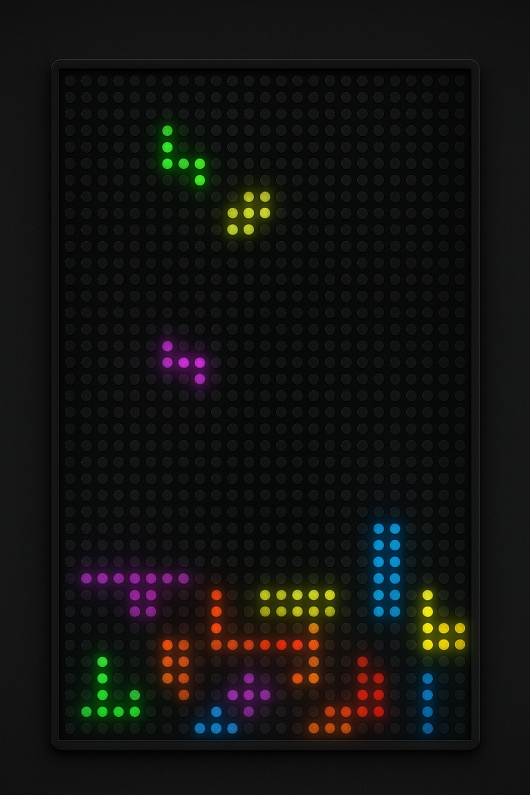
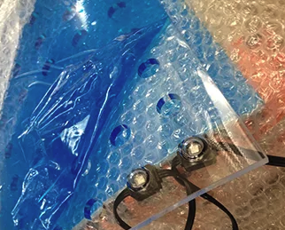
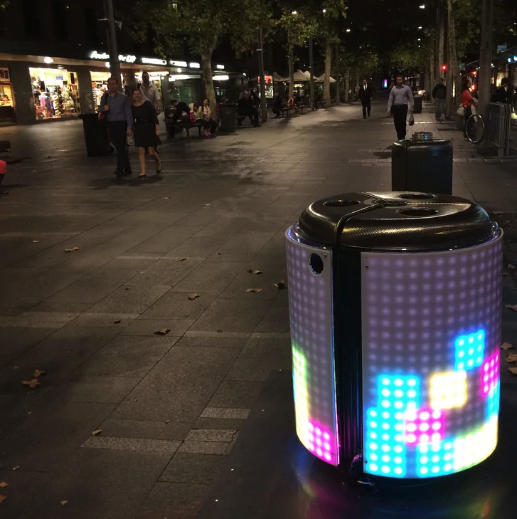

PART ONE
Project Overview
PROJECT OVERVIEW
The Opportunity
Motivated by the idea of play as a way of inspiring people to be aware of environmental sustainability issues. A once overlooked rubbish collection unit can now be transformed into engaging and delightful street furniture. These approaches are designed to enhance the experience of interacting with urban furniture, with the goal of encouraging more active attitudes from people formerly partaking passively in a relatively insignificant activity. In particular, it tackles the problem of littering by associating the act of rubbish disposal with a fun and rewarding activity. The act of putting rubbish into a bin is turned into a game, where a piece of rubbish is mapped to an interaction within a game world displayed on a computer-controlled screen surrounding the bin.
Sencity | ARUP | VIVID Sydney Light Festival
Role: Product Design
Key Responsibilities
- Research and development
- Prototype design & assembly
- Testing & programming
- Marketing & exposure
PART ONE
Project Recap
PART ONE
The Game
Reminiscent of 8-bit era video games, TetraBIN allows you and other players to collaboratively control light blocks on the ‘screen’ to play Tetris. The pattern of these blocks is affected by the size and shape of your litter, as well as by the timing of your act of disposal. Users can drop the rubbish into the bin and the pieces will stack just like the game of tetris.

PART ONE
The Concept
Depositing of rubbish into a bin, which is normally seen as a passive act requiring minimum thought is given importance as the participant must drop their rubbish into the bin at the right moment to advance further in the game. This experience of an augmented reality in which actions in the real world affect the virtual world lead the participant to consider environmental issues facing the city, specifically the collection and management of waste.
PART ONE
The Prototype
Digital fabrication modal
TetraBin needed a lighting system that could be programmable and flexible around a curved
surface. We worked with Media Facade to find the right product for our needs.
We used sensors fitted to the inside to track and position rubbish placed into
the bin with low fidelity LED matrix on the exterior of the bin to display where
each ‘block’ is located. We chose the model C18 from Media Façade as it was:
- Programmable
- Had a Flexible mesh structure
- Was shock resistant
- Bright LED but with Low power consumption
- Ready-to-go installation attachments available with the product
- Can be fitted into our plastic protection sheet after we drilled holes.
PART ONE
The Lighting
Media Facade
TetraBin needed a lighting system that could be programmable and flexible around a curved
surface. We worked with Media Facade to find the right product for our needs.
We used sensors fitted to the inside to track and position rubbish placed into
the bin with low fidelity LED matrix on the exterior of the bin to display where
each ‘block’ is located. We chose the model C18 from Media Façade as it was:
- Programmable
- Had a Flexible mesh structure
- Was shock resistant
- Bright LED but with Low power consumption
- Ready-to-go installation attachments available with the product
- Can be fitted into our plastic protection sheet after we drilled holes.

PART TWO
Installation
Vivid's Light festival Sydney Australia
We installed the Bin at VIVID Sydney Light Festival 2021 in Circular Quay, Sydney Australia.
